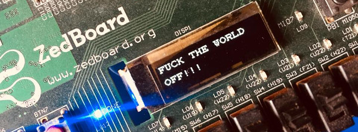

Zedboard

About ZedBoard
ZedBoard™ is a complete development kit for designers interested in exploring designs using the Xilinx Zynq®-7000 All Programmable SoC .
Boot from SD Card with ext4 filesystem
Tài liệu này mô tả các khởi động Zed từ SD card với rootfs được lưu trữ trên một phân vùng định dạng ext4. Phương pháp này có thể được sử dụng cho các board zynq khác như ZC706, PicoZed.
Chuẩn bị images
Trong tài liệu UG1144 có hướng dẫn quá trình cấu hình để có thể khởi động Zynq7000 từ SD Card. Trong hướng dẫn này cần lưu ý đến 2 điểm sau:
-
Thiết lập petalinux project để các image được package dưới dạng có thể boot được từ SD Card.
petalinux-config -
Tạo file rootfs.cpio bằng mã lệnh sau
petalinux-package \--image -c rootfs \--format initramfs
Nếu sử dụng lệnh package để tạo rootfs.cpio xuất hiện lỗi sau:
[INFO ] package rootfs.cpio to /tmp/petalinux/images/linux
ERROR: Linux kernel gen_init_cpio /tmp/petalinux/build/linux/kernel/usr/gen_init_cpio doesn\'t exits! Please build Linux kernel first!make[1]: *** [package-rootfs-cpio] Fehler 255
make: *** [package-rootfs-initramfs] Fehler 2
ERROR: Failed to package component linux/rootfs
*** Need to use extention to emphasize error notes, see in Mkdocs Tool
Trong diễn đàn của Xilinx (link) có thảo luận về phương pháp để khắc phục được lỗi trên. Bao gồm các bước xử lý như sau:
- Tắt chế độ automatic kernel configuration
petalinux-config
Image Packaging Configuration ---> Root filesystem type = SD card
Auto Config Settings ---> [ ] kernel autoconfig
- Bật chế độ hỗ trọ INITRAMFS trong cấu hình của kernel
$ petalinux-config -c kernel
General setup ->
[*] Initial RAM filesystem and RAM disk (initramfs/initrd) support
() Initramfs source file(s)
Kernel Args
Kernel Args bên trong device-tree chứa một số thông tin để kernel có thể tìm kiếm được chính xác root filesystem cần được sử dụng cho hệ thống. Để kernel có thể tìm đến được phân vùng rootfs trên SD card vừa được khởi tạo cần thiết lập kernel args như sau:
bootargs = "console=ttyPS0,115200 earlyprint root=/dev/mmcblk0p2 rw rootwait";
Khi khởi động, kernel sẽ tìm đến phân vùng /dev/mmcblk0p2 để mounting rootfs, sau đó khởi động tiến trình init. Do trong kernel args không khai báo định dạng của phân vùng rootfs này nên kernel sẽ tiến hành thử mounting phân vùng với các định dạng khác nhau và tìm kiếm đến định dạng phù hợp (ở đây là ext4).
Tìm hiểu thêm thông tin về các tham số trong cấu hình trên ở chuyên mục tìm hiểu về Kernel Args.
Phân vùng cho SD card
Cần chuẩn bị SD Card với 02 phân vùng:
-
BOOT: được format ở định dạng FAT32 chứa BOOT.BIN (bao gồm FBSL, PL Bitstream, U-boot) và image.ub (Linux kernel và Device Tree).
-
rootfs: được format ở định dạng ext4 chứa root filesystem.
Quá trình chuẩn bị phân vùng trên SD Card này sẽ được tiến hành đơn giản bằng các GUI Tool như GParted.
Ngoài ra có thể sử dụng tổ hợp CLI tool: fdisk & mkfs.vfat & mkfs.ext4. Phương pháp sử dụng bộ công cụ này được mô tả chi tiết trong Wikipedia của Xilinx.
Kết quả của quá trình phân vùng và format này như sau:

Figure. SD Card Partitions
Cài đặt boot image và rootfs lên SD card
Kết quả sau khi thực hiện xong các bước chuẩn bị liên quan đến images và SD Card:
-
Các file images: BOOT.BIN, image.ub và rootfs.cpio
-
SD Card với hai phân vùng: BOOT và rootfs.
Các images và filesystem phải được cài đặt lên SD Card trước khi board có thể khởi động được từ SD Card.
Bootloader && Kernel
Quá trình cài đặt bootloader và Linux kernel là quá trình copy BOOT.BIN và image.ub lên phân vùng BOOT của sdcard. BootROM của zynq đủ mạnh để có thể tìm kiếm được zynq_fsbl.elf trên phân vùng định dạng FAT32 để khởi động.
Rootfs
Riêng rootfs đang được đóng gói ở file rootfs.cpio. Sử dụng ứng dụng pax để tháo dỡ filesystem đang được đóng gói ở định dạng cpio.
cp images/linux/rootfs.cpio /media/rootfs/
cd /media/rootfs
sudo pax -rvf rootfs.cpio
Ngoài ra, rootfs.cpio có thể được tháo dỡ bằng mã lệnh cpio. Trong một số trường hợp hệ nhúng không tích hợp sẵn gói pax, cpio sẽ là một thay thế cần thiết. Cú pháp như sau:
cpio -i -F rootfs.cpio
Phân tích và kết luận
Trong quá trình chuẩn bị SD Card xuất hiện các thuật ngữ. Trong mục này sẽ đi phân tích và giải thích các thuật ngữ đó.
CPIO
Trong hệ điều hành Linux xuất hiện khái niệm archive (/ˈɑːkaɪv/) file, là kết quả của quá trình đóng gói nhiều file dữ liệu thành một file thống nhất (không có quá trình nén dữ liệu). Mục đích của quá trình đóng gói này là dễ dàng cho quá trình lưu trữ cũng như trao đổi dữ liệu. Archive file cũng được sử dụng làm đầu vào cho các trình nén dữ liệu.
Archive file được đóng gói bằng các file archiver. Trong Unix-like system, các file archiver phổ biến như: tar, ar, cpio.
Rootfs kết quả của bước 1 đang được đóng gói dưới dạng archive file - cpio. Quá trình cài đặt rootfs lên phân vùng rootfs trên SD Card bản chất là quá trình tháo dỡ các archive file trở về các file phân biệt ban đầu.
Quá trình extract này có thể được thực hiện bởi các Linux tool như: cpio hoặc pax. Trong hướng dẫn của Xilinx sử dụng pax để tháo dỡ rootfs.
Fs format: fat32 và ext4
File system là cách mà một hệ thống file được tổ chức trên các bộ nhớ lưu trữ. Các bộ nhớ lưu trữ có thể là: disk file system hoặc flash file system.
Fat32 và ext4 là tên của các dạng file system được tổ chức phổ biến trên các dòng disk file system như SD Card trong bài viết này là một ví dụ. Ngoài ra trong quá trình làm việc với Rootfs của zynq có thể sử dụng đến JFFS2 format là một định dạng file system sử dụng cho các bộ nhớ flash.
XSCT in Zedboard
XSCT (Xilinx Software Command-Line Tool) là giao diện CLI sử dụng để tương tác với Xilinx SDK. Sử dụng XSCT có thể kết nối đến chip Zynq thông qua giao diện JTAG để thực hiện được các nhiệm vụ sau:
- Cấu hình PS7_INIT (cấu hình clock, ddr controller...)
- Nạp bitstream cho chip FPGA
- Tiến hành chạy một chương trình trên ARM CPU
Khởi động XSCT
Cách thông thường và phổ biến nhất với người phát triển là khởi động XSCT từ GUI của SDK. Từ thanh Toolbar chọn: Xilinx > XSCT Console.
Ngoài ra, người dùng Linux có thể khởi động trực tiếp từ terminal bằng binary cung cấp bởi SDK. Điểm mạnh của phương pháp này là tận dụng được các yếu tố gợi nhắc từ terminal.
> cd <SDX-installation-dir>/SDK/2018.2/bin/
> ./xsct
Quá trình khởi chạy một ứng dụng
-
Kết nối đến targets bằng lệnh
connectvà nhóm lệnhtargets> connectSau khi kết nối, các targets được hiển thị bằng lệnh
targets
xsct% targets
1 APU
2* ARM Cortex-A9 MPCore #0 (Running)
3 ARM Cortex-A9 MPCore #1 (Suspended)
4 xc7z020
- Thiết lập ban đầu cho hệ thống
Tìm đến file ps7_init.tcl của hệ thống và tiến hành (trong một số trường hợp cần tiến hành reset target bằng cách chạy lệnhrst):
> source ps7_init.tcl // khai báo các phương thức định nghĩa trong ps7_init.tcl
> ps7_init // chạy ps7_init
> ps7_post_config // chạy ps7_post_config
- Tải chương trình và chạy
> dow <elf file>
> con